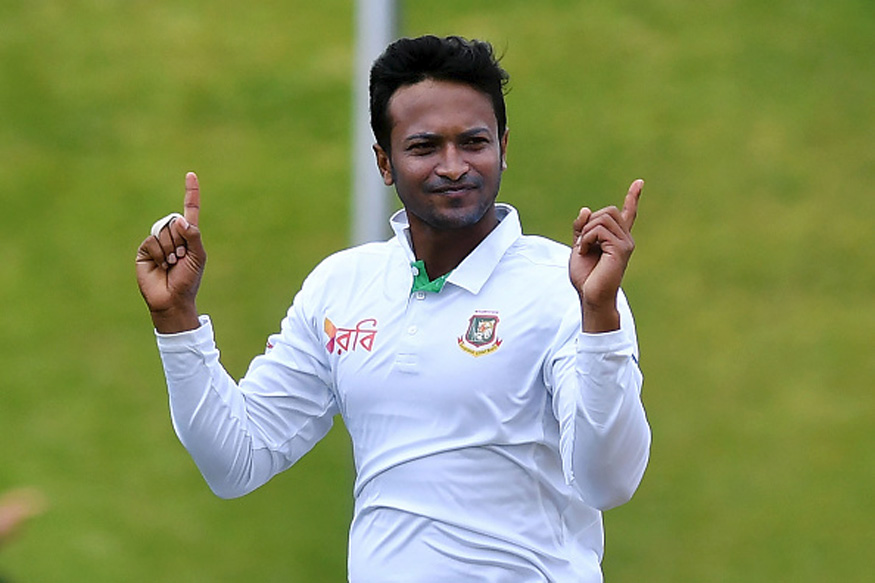

Back to the home page Please click here

Shakib Al Hasan is without a doubt the biggest name to have emerged from Bangladesh cricket circles. Being a genuine all-rounder, Shakib is a vital cog in Bangladesh's line-up. He has been a consistent performer for his country, over the years. Shakib first came into notice when he played cricket for several villages near his hometown of Magura. He spent time honing his skills at a government run sports facility and was picked for the Under-19 squad for the tri-series featuring England and Sri Lanka. He scored a 86-ball century and picked up three wickets in the final to help the team defeat Sri Lanka. This earned him selection for the series against Zimbabwe. He cracked his first ODI ton against Canada in the tri-series played in the West Indies, just before the 2007 World Cup. He scored a composed fifty and bowled 10 tight overs for 44 runs without a wicket as Bangladesh secured a big win over India. His consistent performances enhanced his reputation. He went on to score a century against Pakistan, later in the year. Shakib first came into notice when he played cricket for several villages near his hometown of Magura. He spent time honing his skills at a government run sports facility and was picked for the Under-19 squad for the tri-series featuring England and Sri Lanka. He scored a 86-ball century and picked up three wickets in the final to help the team defeat Sri Lanka.